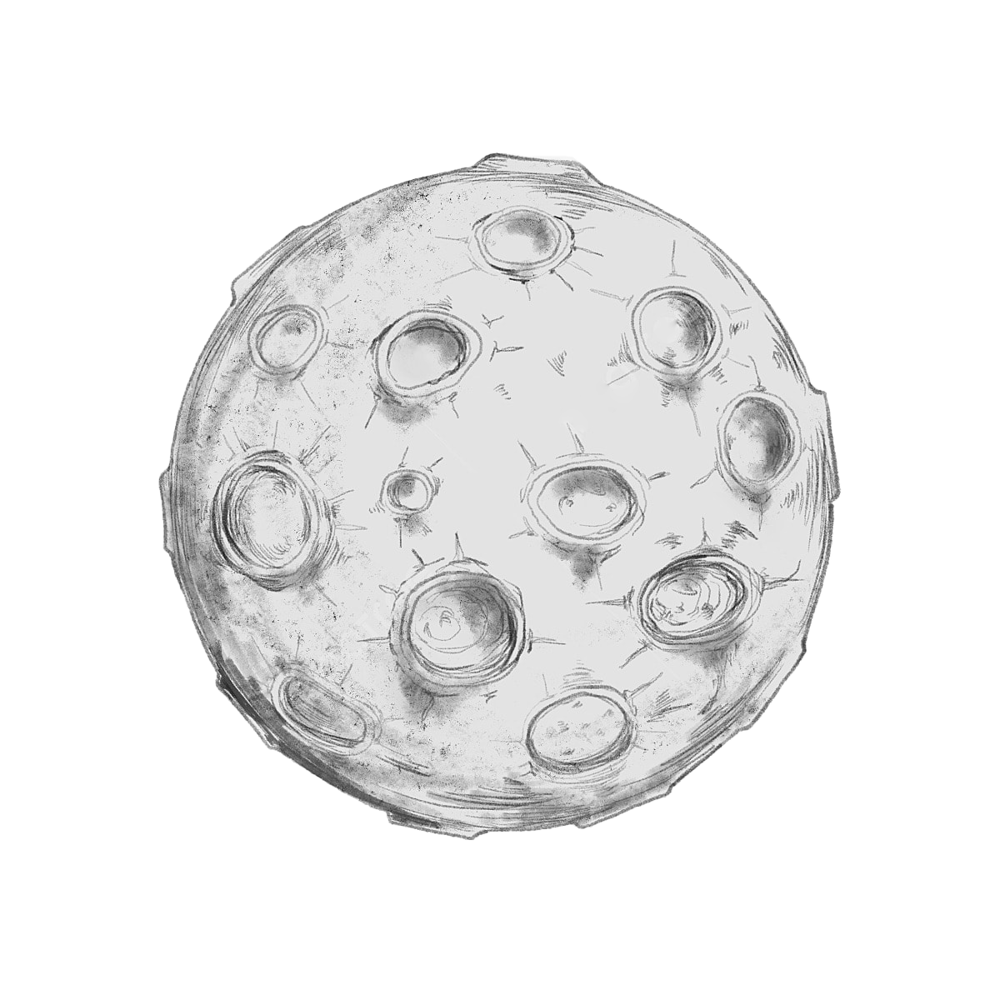
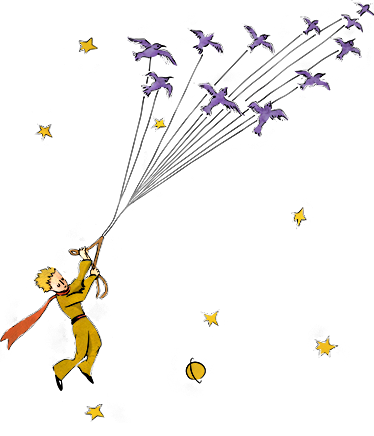
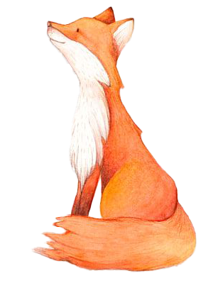

▶
⏸
Анг
|
Рус
Маленький принц
Антуан де Сент-Экзюпери


Ваш браузер не поддерживает это видео.
Маленький принц
Встреча
Планета Принца
Путешествие по планетам
Прибытие на Землю
Секрет Лиса
Поиск смысла
Прощание

Ты навсегда в ответе за всех, кого приручил.